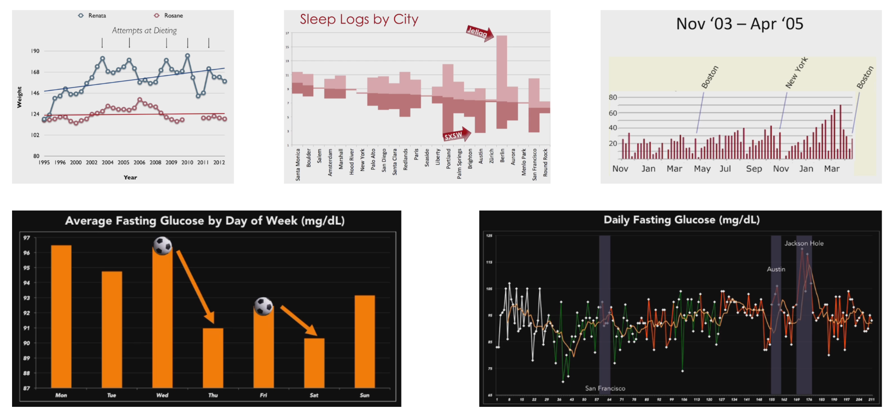
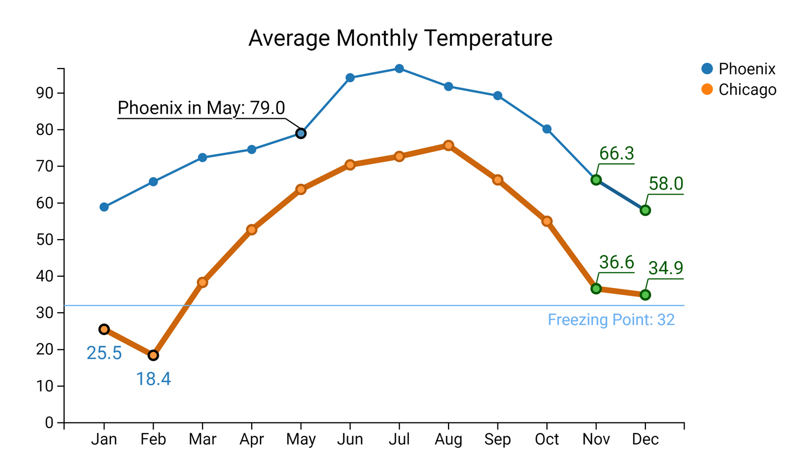

Expressive Information Visualization Design
A Showcase of Projects from the
MSR Data-Driven Storytelling Team
Matthew Brehmer · mabrehme [at] microsoft.com · @mattbrehmer
Postdoctoral Researcher · Microsoft Research Microsoft Vancouver Data Visualization Symposium, 2018-08-01
Data-Driven Storytelling at Microsoft
aka.ms/storytellingwithdata
In Collaboration With...
- External Collaborators: Donghao Ren (UCSB), Tobias Höllerer (UCSB), Eun Kyoung Choe (UMD), Benjamin Bach (University of Edinburgh), Tamara Munzner (UBC)
- Microsoft Research Special Projects: David Tittsworth, Darren Edge, Kate Lytvynets, Chris Trevino, Nathan Evans, Christopher White
- Microsoft Power BI
- The Microsoft Data Journalism Program
Project Showcase:
ChartAccent (2016) · Timeline Storyteller (2017) · Charticulator (2018)
ChartAccent
Create annotated & accentuated charts with a few clicks.
chartaccent.github.io
By Donghao Ren (UCSB), Matthew Brehmer, Bongshin Lee,
Tobias Höllerer (UCSB), and Eun Kyoung Choe (UMD).
“the annotation layer is the- Amanda Cox,
most important thing we do...
otherwise it’s a case of here it is,
you go figure it out."
New York Times Graphics Editor
Chart Annotation in the Wild
 Examples from Characterizing Visualization Insights from Quantified-Selfers’ Personal Data Presentations by Choe et al (2015)7 Features You'll Want in your Next Charting Tool
vis4.net/blog/2015/03/seven-features-youll-wantin-your-next-charting-tool/ by Gregor Aisch (New York Times)
Types of Annotation Targets
Types of Annotation Targets (cont.)

Types of Annotation Forms
chartaccent.github.io
chartaccent.github.io
ChartAccent in Power BI

Summary: chartaccent
Consider the design space of annotation forms and targets.
How can we apply these techniques more broadly?
(beyond bar charts, line graphs, scatterplots)
Timeline Storyteller
A tool for designing visually expressive timeline narratives.
timelinestoryteller.com
By Matthew Brehmer, Bongshin Lee, and Nathalie Henry Riche,
with Chris White, Darren Edge, David Tittsworth, and Kate Lytvynets.
Based on design research conducted in collaboration with Benjamin Bach (University of Edinburgh) and Tamara Munzner (UBC).
Common visual representations of time:


 Image: Joseph Priestley (1765)
Image: Joseph Priestley (1765)
 Image: Joseph Priestley (1765)
Image: Joseph Priestley (1765)
 See "How to make history dates stick" by Mark Twain in Harper's Monthly Magazine (1914).
See "How to make history dates stick" by Mark Twain in Harper's Monthly Magazine (1914).
What is a Timeline For?
What happened when?
In what sequence did the events occur?
How long did the events last?
How long between event A and event B?
Did A and B co-occur?
When did A and B occur relative to event C?
A Timeline Design Space
representations:
scales:


layouts:

Expressive Storytelling With Timelines
Choice of representations and time scales
Support for chronological or non-chronological narratives
The daily routines of famous creative people
Inspired by infographics by Podio and info we trust; data source: Daily Rituals: How Artists Work by Mason Currey (2013)More Timeline Storyteller Stories
- A History of the UK National Trust
Microsoft Data Insights Summit 2017 - A History of Artificial Intelligence
Dublin Data Summit, Future of Storytelling Summit 2017 - The Daily Routines of Famous Creative People
Tapestry Conference 2017, OpenVisConf 2017, IEEE VIS 2017 - TV Network Ratings by Pragmatic Works
- Tropical Cyclones by Manga Solutions
Summary: Storytelling with Timelines
Different combinations of timeline representation and scale
communicate different aspects of the data.
Animated transitions, highlighting, and annotation
incrementally reveal and connect narrative points.
More About Timeline Storyteller
powerbi.microsoft.com/blog/what-story-does-your-timeline-tell-introducing-the-timeline-storyteller-custom-visual-for-microsoft-power-bi/
open-source tool for web & Power BI
chartaccent.github.io
open-source tool for web & Power BI
charticulator.com
open-source tool for the web
mabrehme@microsoft.com · mattbrehmer.github.io · @mattbrehmer